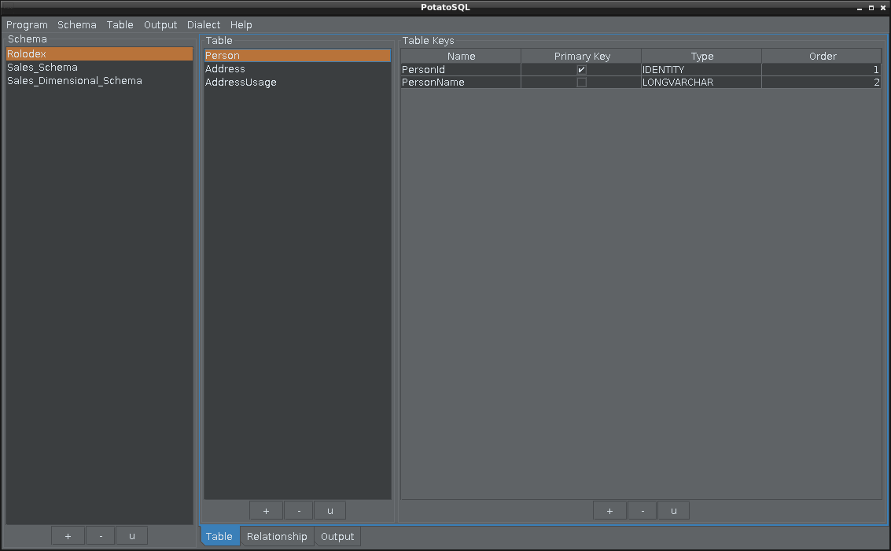

Snack is learning software for nutrition, a meal design tool
and calculator that could facilitate achieving your health goals
and objectives by first helping you understand your food intake and
second by allowing you to create new food combinations that meet
specific requirements. It is also training program designed to find
lowest calorie food combination. It lets you experiment and get
faster, better, less expensive results so you can rapidly
learn.
PotatoSql allows me to create database schemas with minimal
effort and to quickly generate corresponding sql source code for
Hsqldb including referential integrity rules.

This is the application I use to test java look and feel
themes in. Dawn theme is shown below. I am very happy to say that I was
able to design the next look for my applications. It is freely
available at github.
There should be an application where programmers
all over the world can test their new java look and feels and themes in.
Software for designing new java look and feels and themes should exist.

Getting Things Done Software
This is the initial concept. I may implement this if there is
time.
This is my interpretation of Getting Things Done (GTD), a
productivity approach, represented as a finite state machine
diagram using LTSA. Here is the model
for diagram. Use the LTSA Animator to produce a sequence of
actions.
Is there one of these for git development process?
Git Branching Strategy I Use
This is my interpretation of a timed-based release development branching strategy. Here is the model for diagram. Use the LTSA Animator to step through the process. I would love to see other developer's interpretations.

Bibliography Software
I need software that helps with scientific articles tracking
and references.
The purpose of this software is to facilitate color comparisons
and selection. User can create different color combinations and
export them as a text file. Users can then import them and
recreate the color palettes. Users can easily share these text
files.
I created this sofware so I could look at different color
combinations and use those in my java theme designs.
The main objective was to create a couple of new themes. It was
accomplished. Library is available at github, maven.org and
sourceforge. Library includes a few metal themes. Famous artists
color palettes are available at github and sourceforge.

{kind=link}
{kind=link}
{kind=link}